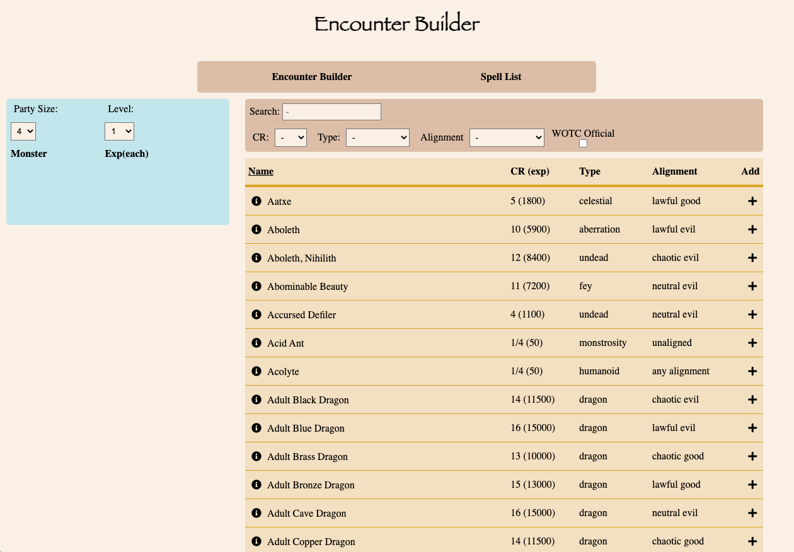
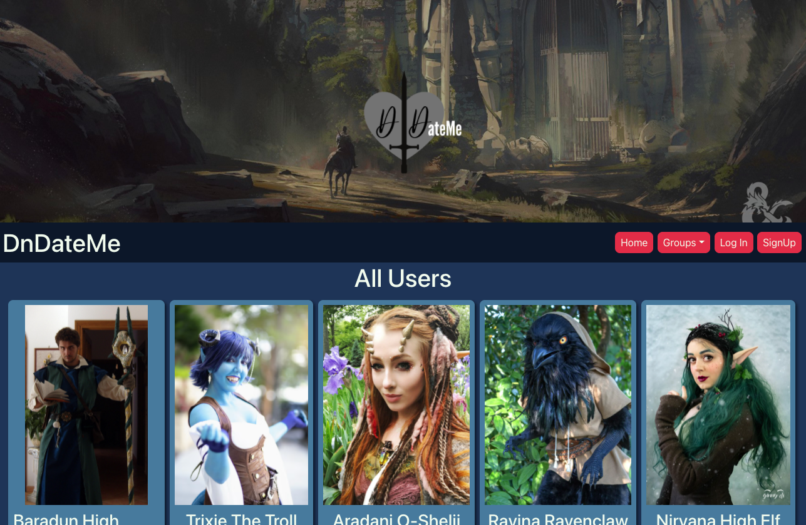
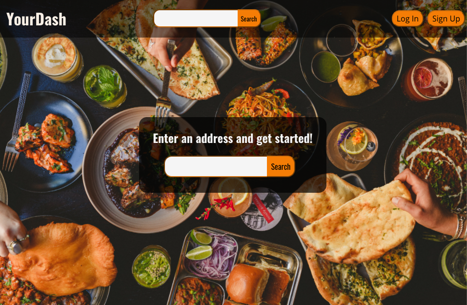

DnD Encounter Builder
GitHub | Live App

The first project assigned in my GA bootcamp was to use jQuery, HTML, and CSS to create an interactive webpage which made calls to a 3rd party API and dynamically displayed the results. I created an app to pull information about enemies in Dungeons and Dragons and allow Game Masters to filter the results and add them to a table which calculates the difficulty of the proposed combat encounter.
Pokemon UniteSquad
GitHub | Live App
DnDateMe
GitHub (Front-End) | GitHub (API) | Live App

For our third project, we worked in pairs to create a Single-Page Application using the MERN stack (Mongoose, Express, React, and Node.js). My partner and I made a DnD themed dating/social-networking app with which a user can create an account, add other users, send messages to other users, and create/join play-groups.
NoTrello
GibHub (Front-End) | GitHub (API) | Live App
YourDash
GitHub (Front-End) | GitHub (API) | Live App

For our capstone project, I created a full-stack application in immitation of food-ordering apps such as DoorDash and GrubHub. I made the front-end using React, having taught myself React-Redux for state management and SASS for styling, and made calls to two 3rd-party APIs. For the backend, I taught myself Java/Spring Boot and Spring Security to allow users to make an account with a hashed password.